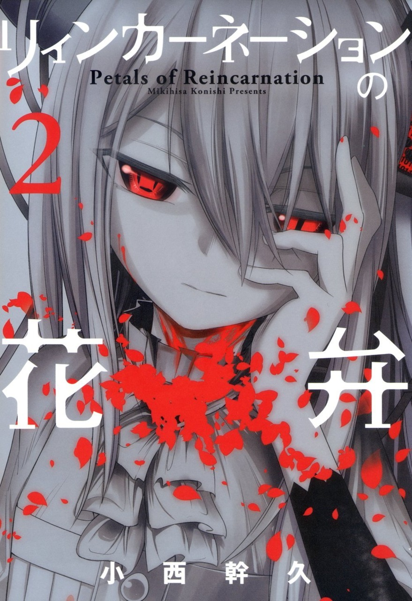

Greats
El Bosque de los Grandes, Bosque de los Magníficos o Forest of the Greats, es la organización compuesta de todos los Reencarnados con Talentos de personas que dejaron una marca positiva en la historia, el motivo de su creación es el de la Paz Mundial. Originalmente estaba compuesta por tan solo 5 Reencarnados reúnidos en un pequeño escondite, pero con el paso del tiempo, los números fueron incrementando hasta contar con miles de Reencarnados con diferentes bases secretas alrededor del mundo, apoyando en los campos filosóficos, históricos, literarios, artísticos, psicológicos, bélicos, y un enorme etcétera.
Además de esto, y siguiendo con las directivas de uno de los Reencarnados fundadores, Leonardo Da Vinci, se tiene como misión el buscar y cazar a todos los Reencarnados cuyos Talentos se especializan en hacerle el mal a la humanidad, los Pecadores, siendo estos el principal obstáculo que le impide al Bosque alcanzar la Paz Mundial.
Más adelante en la historia, se revelaría que el Bosque llegó a una conclusión para cumplir su deseo. Hay demasiados humanos en el planeta como para manejarlos a todos, y la sola existencia de éstos implica la posibilidad de que Reencarnados con Talentos malvados nazcan en cualquier lugar; por lo que el Bosque de los Grandes acabará con los 7 mil millones de seres humanos, manteniendo a solo unos pocos para convertirlos en Reencarnados por medio de las Ramas de la Reencarnación, si su Talento es el de un Grande, se volverá parte del equipo, pero si es un Pecador, se le eliminará inmediatamente.
Esa es la respuesta a la Paz Mundial, eliminar a los humanos y darle paso a su siguiente etapa evolutiva: Los Reencarnados.
Miembros

John V. Neumann
Ella es un miembro fundador y el cerebro detrás del Bosque de los Grandes, suele tener una expresión fría y calculadora. Debido a su inteligencia, es bastante pesimista sobre el futuro que le depara a la humanidad. Es una Reencarnada Perfecta que conoce su edad y pasado, esto es gracias a que utilizó su Talento para averiguar su antigua identidad, no obstante, se niega a hacer lo mismo con los demás miembros por más que se lo pidan. Es consciente de que si alguien se cortó el cuello con la Rama fue para olvidarse de las duras memorias de su pasado.
Talento
Demonio del Cálculo
Su Talento le permite interpretar toda la información que percibe de su entorno para calcular y predecir el futuro.
Padre de la Informática
Puede manipular todos los ordenadores que estén conectados a internet. Realmente tiene control sobre todo lo que use un procesador, lo que significa que, en tiempos modernos como estos, es capaz de conectarse con todo el planeta y ganar acceso al conocimiento colectivo de la humanidad.